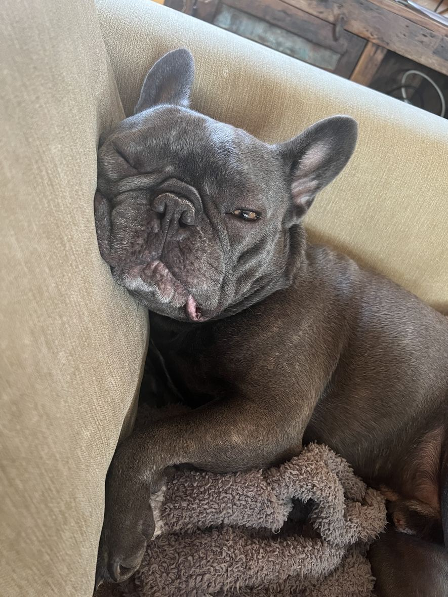
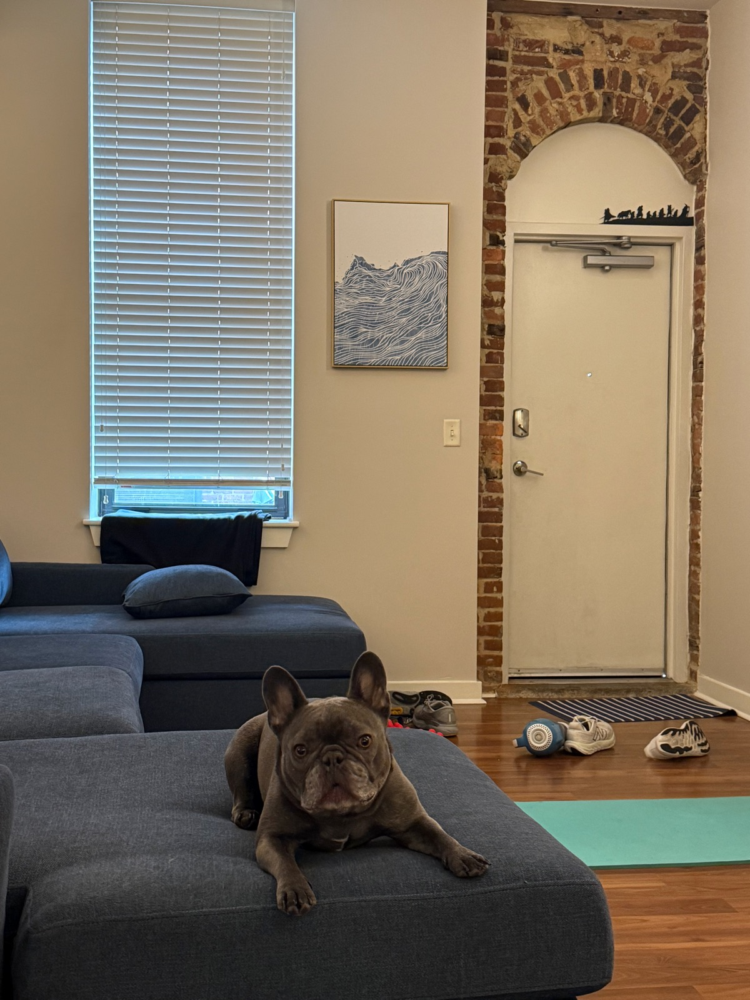
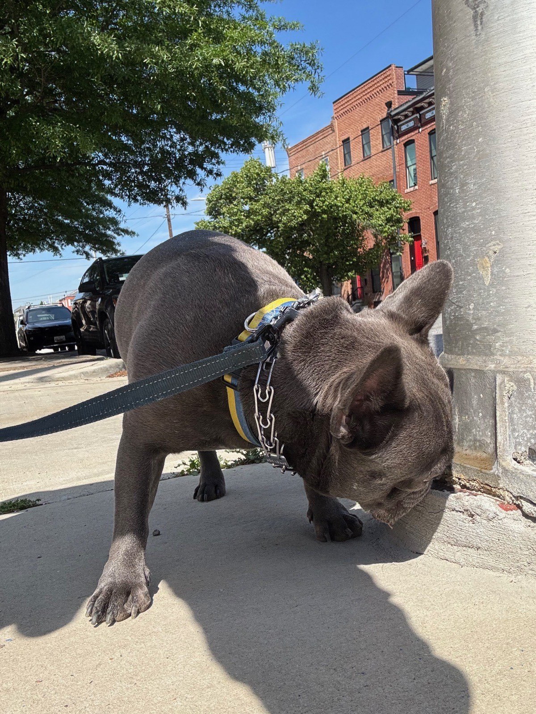
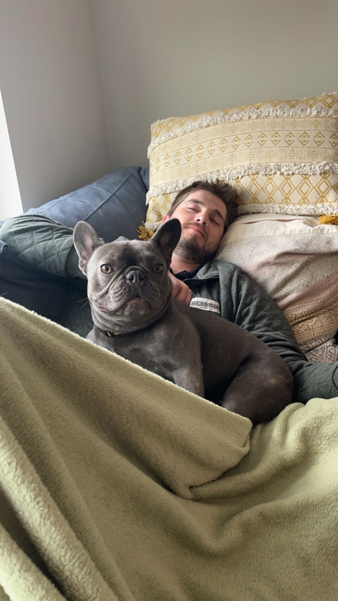
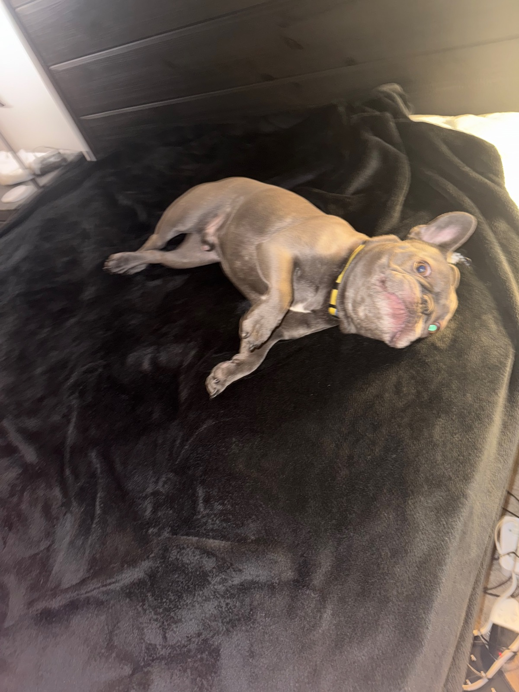
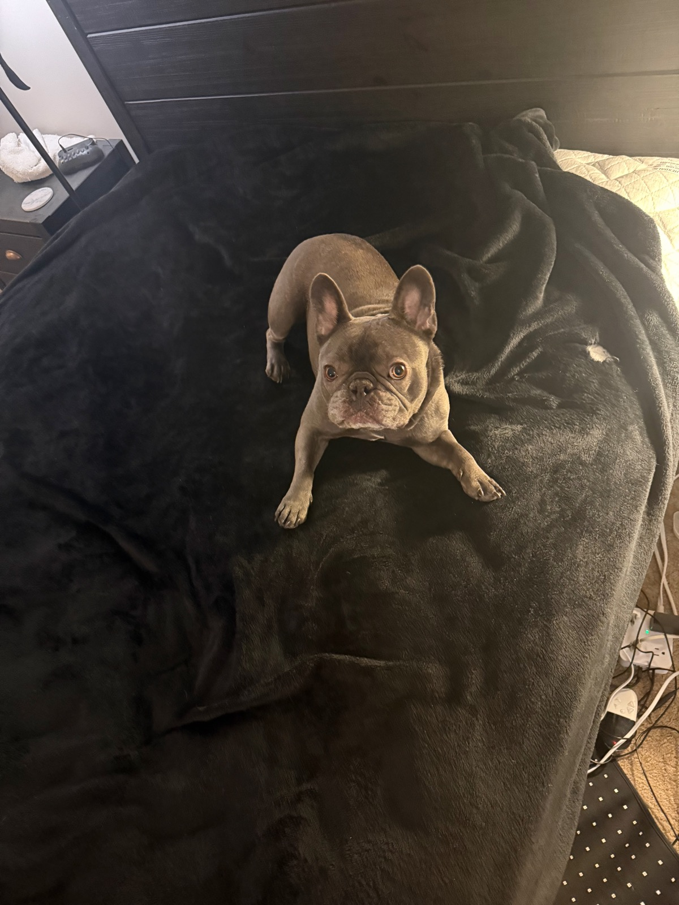

Pet of the Month
Benson is the French Bulldog in Apt 134. Thirty pounds, endlessly friendly, and firmly convinced that everyone in the lobby is here to see him.
September 2026·The Gunther·Baltimore, MD






